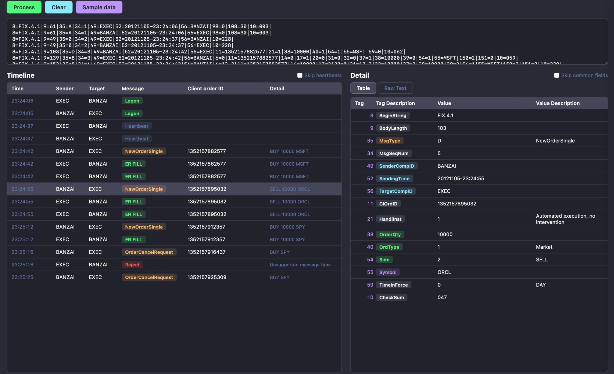

Parse, inspect and debug FIX 4.2, FIX 4.4 and FIX 5.0 messages instantly on your desktop. Works with QuickFIX, Artio FIX, and any FIX engine log output. No cloud. Your data never leaves your machine.
No sign-up required. No usage limits.

Built for algo traders, FIX engine developers, and support engineers who work with FIX 4.2, FIX 4.4 and FIX 5.0 daily. Fully offline — your trading data stays on your machine.
Paste one or hundreds of FIX messages from any engine — QuickFIX, Artio, or custom. They're split, parsed, and displayed in milliseconds, powered by native Rust performance.
See every FIX message in chronological order with sender (SenderCompID), target (TargetCompID), MsgType badges, order details, and one-click selection.
Click any FIX message to see all tag/value pairs with human-readable descriptions. Decodes MsgType, OrdStatus, Side, ExecType, TimeInForce and 150+ standard FIX tags.
Full tag reference for FIX 4.2, FIX 4.4 and FIX 5.0 — no external reference needed. Covers all standard tags across NewOrderSingle, ExecutionReport, OrderCancelRequest and more.
Switch to Raw Text view for a clean, copyable representation of any parsed FIX message — perfect for support tickets, incident reports, and documentation.
Your FIX log data never leaves your machine. No network calls, no telemetry, no cloud upload — everything is parsed locally. Safe for sensitive production order flow.
Compatible with log output from QuickFIX, QuickFIX/J, Artio FIX, B2BITS, FIXIOM, and any engine that produces standard FIX 4.2 / 4.4 / 5.0 message strings.
A beautiful dark interface with the popular Dracula color palette. Easy on the eyes during long debugging sessions on production FIX logs.
Common questions about FIX protocol parsing and AI FIX Parser.
AI FIX Parser supports FIX 4.0, FIX 4.1, FIX 4.2, FIX 4.4, FIX 5.0, FIX 5.0 SP1 and FIX 5.0 SP2 message formats. The built-in dictionary covers all standard tags across every version.
Yes. FIX 4.2 is fully supported. All standard FIX 4.2 message types are decoded including NewOrderSingle (D), ExecutionReport (8), OrderCancelRequest (F), OrderCancelReplaceRequest (G), and more.
Yes. FIX 4.4 is fully supported. AI FIX Parser decodes all FIX 4.4 tags and message types, including the additional fields introduced in FIX 4.4 such as CrossOrder and MultilegOrder.
Yes. FIX 5.0, FIX 5.0 SP1 and FIX 5.0 SP2 (the latest FIX standard) are supported. Note: there is no "FIX 5.2" — FIX 5.0 SP2 is the most recent version of the FIX protocol specification.
Yes. Paste raw FIX log lines from QuickFIX, QuickFIX/J, Artio FIX, B2BITS FIXIOM, or any FIX 4.2 / 4.4 / 5.0 engine and they are decoded instantly, fully offline.
All standard types: NewOrderSingle (D), ExecutionReport (8), OrderCancelRequest (F), OrderCancelReplaceRequest (G), MarketDataRequest (V), Heartbeat (0), Logon (A), Logout (5), and all other FIX 4.2/4.4/5.0 MsgTypes.
No. AI FIX Parser is 100% offline. No network calls, no telemetry. Your order flow and FIX logs never leave your machine.
Yes — completely free, no subscription, no sign-up, no usage limits. Download and run on macOS or Windows.
FIX (Financial Information eXchange) is the industry-standard messaging protocol for electronic trading. FIX 4.2 and FIX 4.4 are the most widely deployed versions across equities, derivatives, and FX order routing globally.
A FIX engine (like QuickFIX or Artio FIX) connects to a counterparty and sends/receives orders. AI FIX Parser is a log viewer and debugger — it helps you understand and troubleshoot the messages your FIX engine produces.